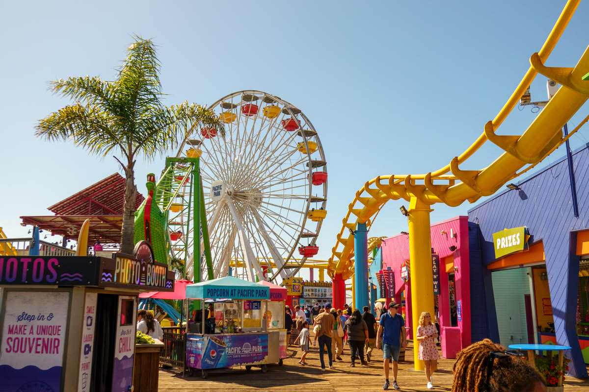
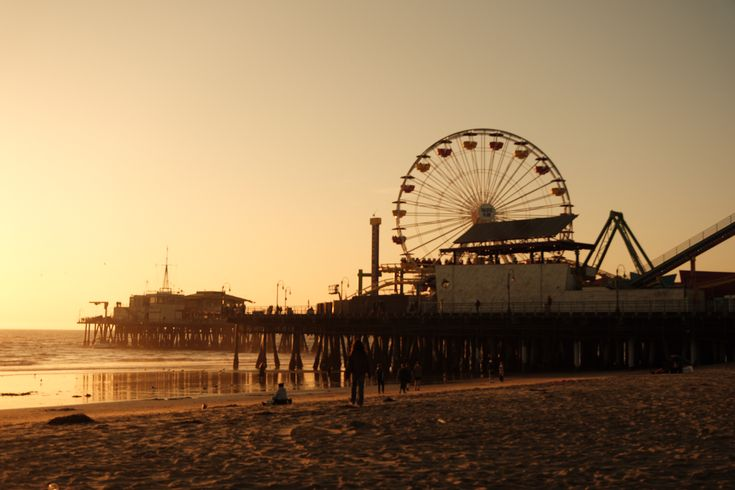

Overview
The Santa Monica Pier is one of the most iconic landmarks in Los Angeles, California, attracting millions of visitors every year.
Extending into the Pacific Ocean, this historic pier offers a unique combination of history, entertainment, and natural beauty. Since opening on September 9, 1909, it has become a symbol of Southern California’s vibrant beach lifestyle while preserving more than a century of history. Today, visitors can enjoy the beautiful ocean views, explore historic attractions, and experience the lively atmosphere of the pier.


Unlike many modern attractions, Santa Monica Pier successfully blends the past and present in one destination. Visitors can enjoy classic amusement rides, including the famous Pacific Wheel, explore the historic carousel, watch talented street performers, and admire spectacular sunsets over the Pacific Ocean. The pier is also connected to the legendary Route 66, making it not only a popular tourist attraction but also a meaningful part of American travel history.
The History
The Santa Monica Pier was originally built as a municipal pier designed to carry sewer pipes beyond the ocean's breaking waves. Although its first purpose was practical rather than recreational, its future changed when the Looff Pleasure Pier was added a few years later. This new section introduced amusement rides, games, and entertainment, transforming the area into a popular gathering place for families and tourists.


During the 1970s, the pier faced the possibility of demolition. However, local residents launched the famous "Save Our Pier Forever" campaign, successfully preserving this beloved landmark. Thanks to their efforts, the pier remains one of California's most treasured attractions today.
Attractions

Pacific Wheel
The world's first and only solar-powered Ferris wheel, rising approximately 130 feet (40 meters) above the ocean and offering panoramic views of the coastline, Santa Monica Mountains, and city skyline. At night, thousands of colorful LED lights create a dazzling display. Located at Pacific Park.
Historic Carousel
Located inside the beautifully preserved Looff Hippodrome, this hand-carved carousel has delighted visitors for more than a century and remains one of the pier's most cherished attractions.

Route 66 End of the Trail Sign
This famous landmark marks the western end of America's legendary Route 66, making it one of the pier's most photographed locations.
Why Unique?
One of the most fascinating aspects of Santa Monica Pier is its ability to create different experiences throughout the day.

Sunset Views✨Fun Fact: Santa Monica Pier offers unobstructed 180° sunset vistas over the Pacific Ocean every evening!
 Beneath the Pier
Beneath the Pier
Located directly underneath the carousel building, housing over 100 local species!
In the morning, surfers ride the Pacific waves while joggers enjoy the refreshing sea breeze. During the afternoon, musicians, magicians, and artists fill the boardwalk with energy and creativity. As evening arrives, the sky transforms into brilliant shades of orange, pink, and purple, creating one of Los Angeles' most unforgettable sunset views.